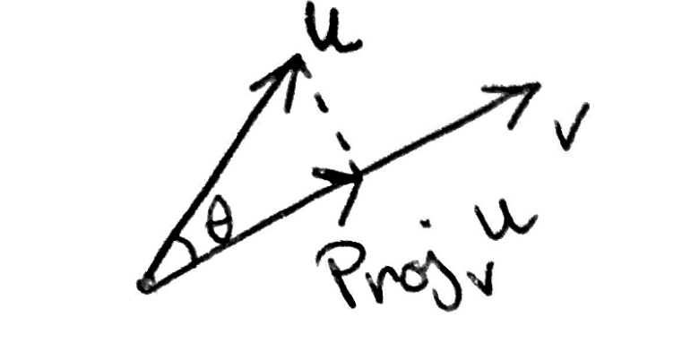
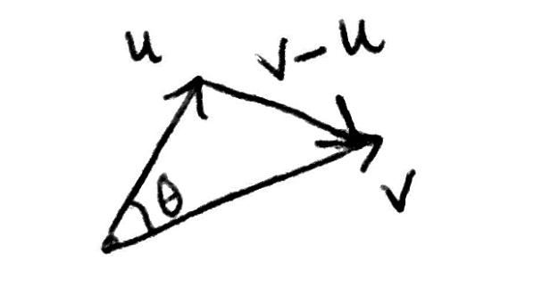

Intro
In this post, we will talk about vectors and in particular about a special operation which is the projection operation. As usual, we will discover the projection as a problem. I assume that you know what vectors and matrices are. Also, all vectors here belong to $\mathbb{R}^n$ for $n > 0$, unless said otherwise. All vectors are in the canonical basis of the identity matrix, that is vectors are of the form $\mathbf{u} = \sum_{i=1}^n u_i \mathbf{e}_i$, where if we stack $\mathbf{e}_i$ as the columns of a matrix we would get the identity matrix. Some notation: vectors are bold symbols $\mathbf{u}$ and its coordinates are $u_i$. We will talk of vectors in $n$ dimensions because all the operations we will use are indifferent to its dimension, however, we can always imagine that vectors belong to $n=2,3$ and then generalize to $n$ dimensions.The Problem

Fig.1 The Problem
Let $\mathbf{u} \in \mathbb{R}^{n}$ and $\mathbf{v} \in \mathbb{R}^{n}$ we want to find $\mathbf{proj}_{\mathbf{v}}\mathbf{u}$, as Fig.1 suggests. The first thing we can tell about $\mathbf{proj}_{\mathbf{v}}\mathbf{u}$ is that $$\mathbf{proj}_{\mathbf{v}}\mathbf{u} = |\mathbf{proj}_{\mathbf{v}}\mathbf{u}| \frac{\mathbf{v}}{|\mathbf{v}|} \;\;\;\;(1)$$ Note that $\left | \frac{\mathbf{v}}{|\mathbf{v}|}\right | = \frac{1}{|\mathbf{v}|} |\mathbf{v}| = 1$.
Before we move forward I will introduce the dot product operation that is a very useful operation. At first it seems that it is just syntactic sugar to reduce the length of calculations, but actually, its properties and geometric interpretations will provide an amazing tool for many problems and proofs.
Definition 1 : Dot product
$$ \mathbf{u}\cdot \mathbf{v} = \left < \mathbf{u},\mathbf{v} \right > = \sum_{i=1}^{n} u_i v_i$$ I will use $\left < \cdot, \cdot \right >$ and the dot $ \cdot $ interchangeably, but they are two different ways of writing the dot product. It is easy to show that is a linear operation (you can do it as an exercise): $$\text{1) } \left < \mathbf{u} + \mathbf{v} , \mathbf{w} \right > = \left < \mathbf{u}, \mathbf{w} \right > + \left < \mathbf{v}, \mathbf{w}\right >$$ $$\text{2) } \left < r \mathbf{u} , \mathbf{w} \right > = r \left < \mathbf{u}, \mathbf{w} \right > ,\;\; r \in \mathbb{R}$$Other nice property is that $\left < \mathbf{u} , \mathbf{u}\right> = \sum_{i=1}^n u_i^2 = |\mathbf{u}|^2$. With that in mind its is simple to see with some trigonometry that : $$\cos (\theta) = \frac{|\mathbf{proj}_{\mathbf{v}}\mathbf{u}|}{|\mathbf{u}|}$$ $$\Leftrightarrow |\mathbf{u}|\cos (\theta) = |\mathbf{proj}_{\mathbf{v}}\mathbf{u}| \;\;\;\;(2)$$ Now substituting (2) in (1) we get : $$\mathbf{proj}_{\mathbf{v}}\mathbf{u} = |\mathbf{u}|\cos (\theta)\frac{\mathbf{v}}{|\mathbf{v}|} \;\;\;\;(3)$$

Fig.2 Vector triangle
Using Fig 2 and the Law of Cosines we get : $$|\mathbf{v} - \mathbf{u}|^{2} = |\mathbf{u}|^{2} + |\mathbf{v}|^{2} - 2|\mathbf{u}||\mathbf{v}|\cos(\theta)$$ $$\Leftrightarrow\cos(\theta) = \frac{|\mathbf{u}|^{2} + |\mathbf{v}|^{2} - |\mathbf{v} - \mathbf{u}|^{2}}{ 2|\mathbf{u}||\mathbf{v}|}$$ Then we need to simplify $|\mathbf{u}|^{2} + |\mathbf{v}|^{2} - |\mathbf{v} - \mathbf{u}|^{2}$: $$|\mathbf{u}|^2 + |\mathbf{v}|^2 - |\mathbf{v} - \mathbf{u}|^2 = |\mathbf{u}|^2 + |\mathbf{v}|^2 - \left <\mathbf{u-v, u-v} \right>$$ $$|\mathbf{u}|^2 + |\mathbf{v}|^2 - \left <\mathbf{u-v, u-v} \right> = |\mathbf{u}|^2 + |\mathbf{v}|^2 - \left ( \left<\mathbf{u,u} \right> - 2 \left< \mathbf{u,v}\right > + \left < \mathbf{v,v}\right >\right )$$ $$|\mathbf{u}|^2 + |\mathbf{v}|^2 - \left ( \left<\mathbf{u,u} \right> - 2 \left< \mathbf{u,v}\right > + \left < \mathbf{v,v}\right >\right ) = 2 \left< \mathbf{u,v}\right >$$ Hence we get: $$\cos(\theta) = \frac{\mathbf{u}\cdot\mathbf{v}}{ |\mathbf{u}||\mathbf{v}|} \;\;\;\; (4)$$ Substituting (4) in (3) we get: $$\mathbf{proj}_{\mathbf{v}}\mathbf{u} = \frac{\mathbf{u}\cdot \mathbf{v}}{|\mathbf{v}|^{2}}\mathbf{v}\;\;\;\;(5)$$ Nice! Now we have a formula for the $\mathbf{proj}_{\mathbf{v}}\mathbf{u}$, but I find that this derivation was too difficult and that we are missing something fundamental on this problem. What is really $\mathbf{proj}_{\mathbf{v}}\mathbf{u}$? if we think well you will see that the fundamental problem you are trying to solve is the problem of finding a multiple of $\mathbf{v}$ that best approximates $\mathbf{u}$! So we want to find : $$\underset{\mathbf{\gamma}}{\operatorname{argmin}}|\mathbf{u} - \gamma \mathbf{v}|^{2}$$ But this is simple to solve (check Intuition of Calculus ), just solve for $\gamma$ in the following equation: $$\frac{d}{d \gamma}\left (|\mathbf{u} - \gamma\mathbf{v}|^{2} \right) = 0 \;\;\;\;(6)$$ $$\Leftrightarrow \frac{d}{d \gamma}\left( \left< \mathbf{u} - \gamma \mathbf{v}, \mathbf{u} - \gamma \mathbf{v}\right>\right ) = 0$$ $$\Leftrightarrow \frac{d}{d \gamma}\left( |\mathbf{u}|^2 - 2 \gamma \left<\mathbf{v}, \mathbf{u} \right > + \gamma^2 |\mathbf{v}|^2\right ) = 0$$ $$\Leftrightarrow -2\left<\mathbf{v}, \mathbf{u} \right > + 2\gamma |\mathbf{v}|^2 = 0$$ $$\Leftrightarrow \gamma = \frac{\left < \mathbf{u}, \mathbf{v}\right>}{|\mathbf{v}|^2 }$$ I think this is the best way to derive projection formula, also it gives us a better intuition in higher dimensions. Also we can generalize this to functions(with domain $\mathbb{R}$ and image $\mathbb{R}$), for instance to compute $\mathbf{proj}_{g}f$ you just need to find $\gamma$ such that when multiplied by $g$ gives the best approximation of $f$. More formally: Let $f,g:[a,b]\rightarrow\mathbb{R}$ we want to solve: $$\underset{\mathbf{\gamma}}{\operatorname{argmin}}\int_{a}^{b}(f(x) - \gamma g(x))^2 dx\;\;\;\; (7)$$ To find $\gamma$ we proceed as before: $$\frac{d }{d\gamma}\left ( \int_{a}^{b}(f(x) - \gamma g(x))^2 dx\right ) = 0$$ $$\Leftrightarrow \int_{a}^{b}\frac{d }{d\gamma}\left ((f(x) - \gamma g(x))^2\right ) dx = 0$$ $$\Leftrightarrow \int_{a}^{b}\frac{d }{d\gamma}\left (f(x)^2 - 2\gamma f(x)g(x) + \gamma ^2 g(x)^2 \right ) dx = 0$$ $$\Leftrightarrow \int_{a}^{b}- 2f(x)g(x) + 2\gamma g(x)^2 dx = 0$$ $$\Leftrightarrow -2\int_{a}^{b} f(x)g(x)dx + 2\gamma\int_{a}^{b} g(x)^2dx = 0$$ $$\Leftrightarrow \gamma = \frac{\int_{a}^{b}f(x)g(x)dx}{\int_{a}^{b} g(x)^2 dx}\;\;\;\;(8)$$ You can check that formula (5) and (8) are very similar, this similarity gives me the urge to define a dot product for functions as $\left < f,g \right > = \int_{a}^{b} f(x) g(x) dx$, thus the projection of functions or vectors can be defined as: $$\mathbf{proj}_{\mathbf{v}}\mathbf{u} = \frac{\left <\mathbf{u},\mathbf{v}\right>}{\left < \mathbf{v},\mathbf{v} \right>} \mathbf{v}$$ $$\mathbf{proj}_{g}f = \frac{\left < f,g \right >}{\left< g,g \right >} g$$ This make us think that functions maybe thought as infinite dimensional vectors, where its coordinates are indexed by $x$.
One more thing , note that when $|\mathbf{v}|^2 = 1$, $\mathbf{v}$ is a unit vector then $\mathbf{proj}_{\mathbf{v}}\mathbf{u} = \left < \mathbf{u},\mathbf{v} \right> \mathbf{v}$ , in functions if $ \left< g, g \right> = 1$, this means that $g^2$ is a probability density function, then projection of $f$ in $g$ is $\mathbf{proj}_{g}f = \left < f, g \right > g$. Now we finish this post on the projector operator of vector spaces.